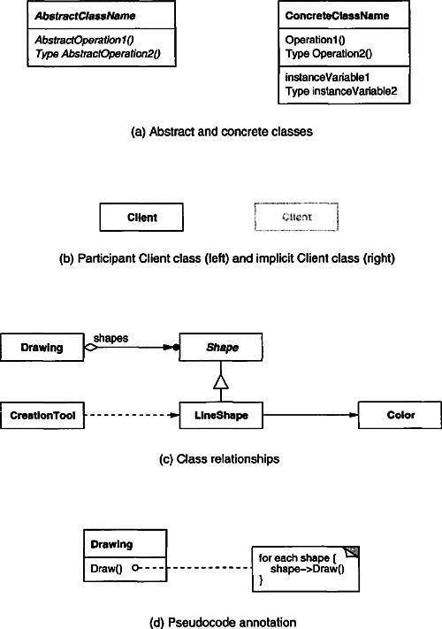
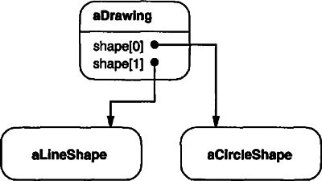
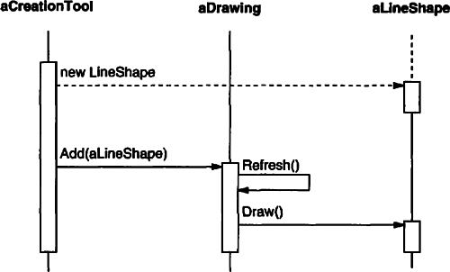

We use diagrams throughout the book to illustrate important ideas. Some diagrams are informal, like a screen shot of a dialog box or a schematic showing a tree of objects. But the design patterns in particular use more formal notations to denote relationships and interactions between classes and objects. This appendix describes these notations in detail.
We use three different diagrammatic notations:
1. A class diagram depicts classes, their structure, and the static relationships between them.
2. An object diagram depicts a particular object structure at run-time.
3. An interaction diagram shows the flow of requests between objects.
Each design pattern includes at least one class diagram. The other notations are used as needed to supplement the discussion. The class and object diagrams are based on OMT (Object Modeling Technique) [RBP+91, Rum94].1 The interaction diagrams are taken from Objectory [JCJO92] and the Booch method [Boo94]. These notations are summarized on the inside back cover of the book.
Figure B.1a shows the OMT notation for abstract and concrete classes. A class is denoted by a box with the class name in bold type at the top. The key operations of the class appear below the class name. Any instance variables appear below the operations.
Figure B.1: Class diagram notation

Type information is optional; we use the C++ convention, which puts the type name before the name of the operation (to signify the return type), instance variable, or actual parameter. Slanted type indicates that the class or operation is abstract.
In some design patterns it’s helpful to see where client classes reference Participant classes. When a pattern includes a Client class as one of its participants (meaning the client has a responsibility in the pattern), the Client appears as an ordinary class. This is true in Flyweight (195), for example. When the pattern does not include a Client participant (i.e., clients have no responsibilities in the pattern), but including it nevertheless clarifies which pattern participants interact with clients, then the Client class is shown in gray, as shown in Figure B.1b. An example is Proxy (207). A gray Client also makes it clear that we haven’t accidentally omitted the Client from the Participants discussion.
Figure B.1c shows various relationships between classes. The OMT notation for class inheritance is a triangle connecting a subclass (LineShape in the figure) to its parent class (Shape). An object reference representing a part-of or aggregation relationship is indicated by an arrowheaded line with a diamond at the base. The arrow points to the class that is aggregated (e.g., Shape). An arrowheaded line without the diamond denotes acquaintance (e.g., a LineShape keeps a reference to a Color object, which other shapes may share). A name for the reference may appear near the base to distinguish it from other references.2
Another useful thing to show is which classes instantiate which others. We use a dashed arrowheaded line to indicate this, since OMT doesn’t support it. We call this the “creates” relationship. The arrow points to the class that’s instantiated. In Figure B.1c, CreationTool creates LineShape objects.
OMT also defines a filled circle to mean “more than one.” When the circle appears at the head of a reference, it means multiple objects are being referenced or aggregated. Figure B.1c shows that Drawing aggregates multiple objects of type Shape.
Finally, we’ve augmented OMT with pseudocode annotations to let us sketch the implementations of operations. Figure B.1d shows the pseudocode annotation for the Draw operation on the Drawing class.
An object diagram shows instances exclusively. It provides a snapshot of the objects in a design pattern. The objects are named “aSomething”, where Something is the class of the object. Our symbol for an object (modified slightly from standard OMT) is a rounded box with a line separating the object name from any object references. Arrows indicate the object referenced. Figure B.2 shows an example.
Figure B.2: Object diagram notation

An interaction diagram shows the order in which requests between objects get executed. Figure B.3 is an interaction diagram that shows how a shape gets added to a drawing.
Figure B.3: Interaction diagram notation

Time flows from top to bottom in an interaction diagram. A solid vertical line indicates the lifetime of a particular object. The naming convention for objects is the same as for object diagrams—the class name prefixed by the letter “a” (e.g., aShape). If the object doesn’t get instantiated until after the beginning of time as recorded in the diagram, then its vertical line appears dashed until the point of creation.
A vertical rectangle shows that an object is active; that is, it is handling a request. The operation can send requests to other objects; these are indicated with a horizontal arrow pointing to the receiving object. The name of the request is shown above the arrow. A request to create an object is shown with a dashed arrowheaded line. A request to the sending object itself points back to the sender.
Figure B.3 shows that the first request is from aCreationTool to create aLineShape. Later, aLineShape is Added to aDrawing, which prompts aDrawing to send a Refresh request to itself. Note that aDrawing sends a Draw request to aLineShape as part of the Refresh operation.